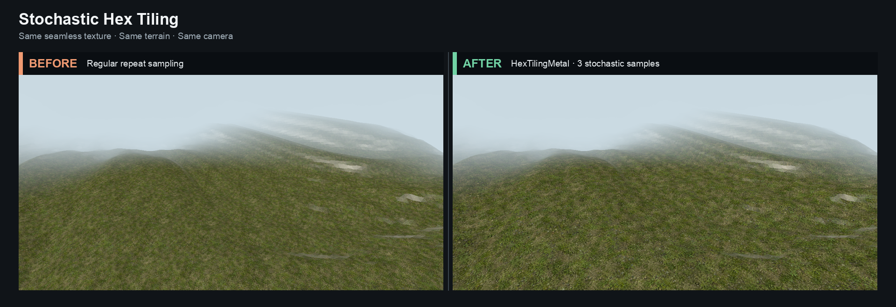

Metal · Swift Package
Break the repeat.
Keep the texture.
Stochastic hex tiling for Apple GPUs. Up to three translated samples suppress visible repetition—without larger textures or generated geometry.

01
Metal only
No MetalKit or AppKit dependency. Use any renderer or drawable stack.
02
Mip correct
Explicit gradients preserve filtering across stochastic patch boundaries.
03
PBR ready
Apply the same lattice to color, normal, roughness, and metalness maps.
One primitive
Compose it with your shader.
The package ships MSL source and a small Swift configuration API. Your material decides which maps use stochastic sampling.
Renderer.swift
Swift
import MetalHexTiling
let library = try HexTilingMetal.makeLibrary(
device: device,
appending: shaderSource
)
var options = HexTilingParameters(
patchScale: 2
).shaderVector